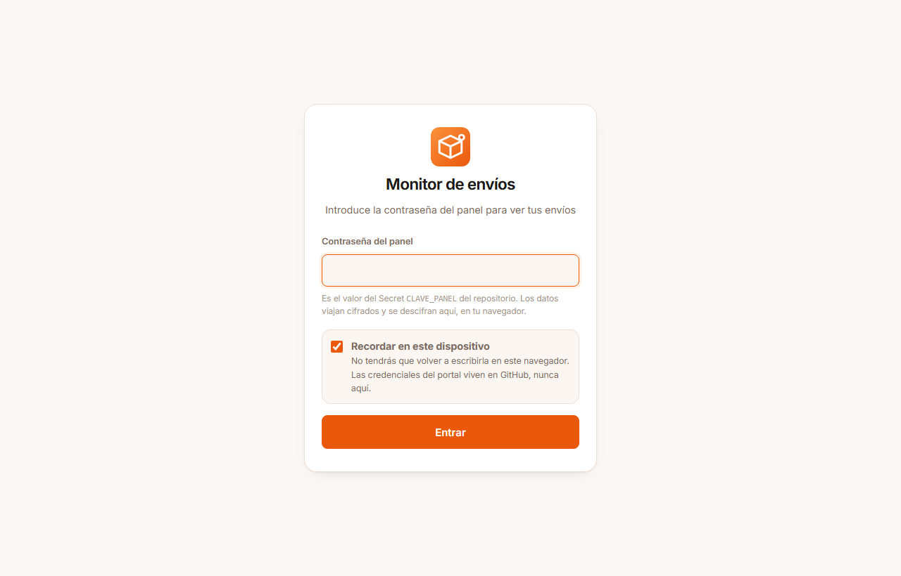
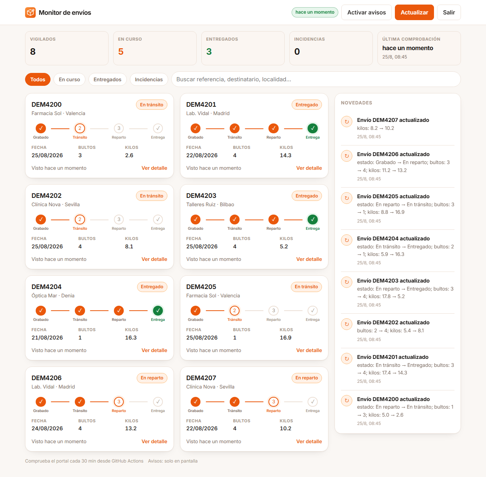
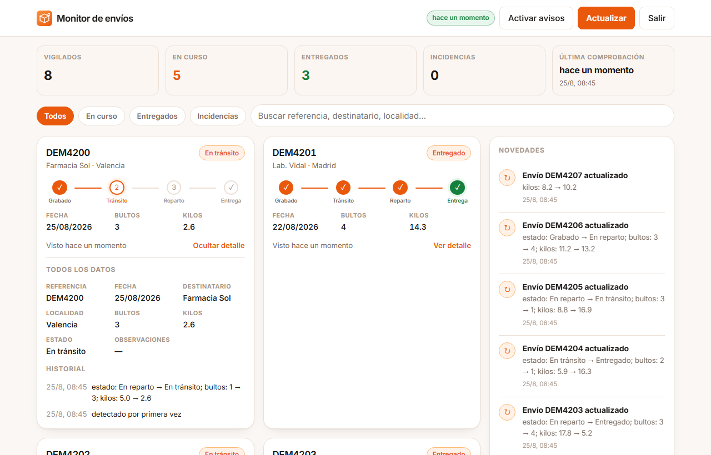
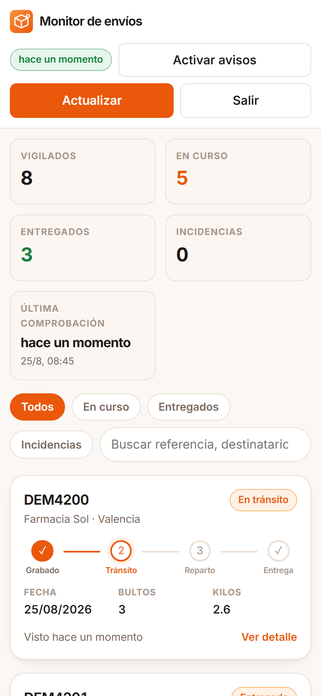
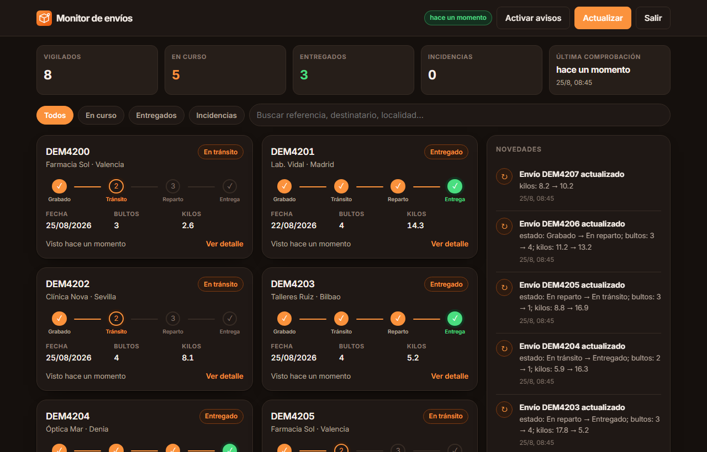

Guía de puesta en marcha: lo que falta por hacer y cómo ver la aplicación.
Generada el 25 de agosto de 2026.
frames del portal se
concatenaba en una sola cadena y el analizador solo veía el primero, que nunca es el que trae el
listado. Lo único que queda es desplegarlo en tu cuenta de GitHub, y eso solo puedes
hacerlo tú porque hacen falta tus credenciales.
Puedes abrir el panel en tu ordenador con datos ficticios en menos de un minuto. No hace falta
ninguna credencial ni contacto con el portal real. El entorno de Python ya está montado en la
carpeta .venv del proyecto.
Abre PowerShell y pega esto. Las tres primeras órdenes generan datos de demostración; la última levanta el servidor.
cd "d:\Documentos - SSD\SCRIPTS\SHIPMENTMONITOR\monitor-envios-github\monitor-envios-nube"
$env:CLAVE_PANEL = "prueba"
.\.venv\Scripts\python.exe -m monitor.ejecutar --demo --sin-avisos
.\.venv\Scripts\python.exe -m monitor.ejecutar --demo --semilla 1 --sin-avisos
.\.venv\Scripts\python.exe -m http.server 8899 --directory docsAbre http://localhost:8899 en el navegador y escribe la contraseña
prueba. Para parar el servidor, Ctrl+C en esa ventana.
La segunda pasada (--semilla 1) existe para que veas el panel con vida: la primera
solo toma la foto inicial y no genera novedades; la segunda cambia estados, bultos y pesos, así
que se llena la columna de novedades de la derecha.
docs\datos.json de demostración
queda cifrado con la contraseña prueba. Si lo subes al repositorio, la primera
ejecución real fallará al no poder descifrarlo con tu CLAVE_PANEL. Bórralo antes de
subir:Remove-Item docs\datos.json
Unos 15 minutos en total. Coste: 0 €.
https://github.com/new.monitor-envios.monitor-envios-nube
(el contenido, no la carpeta en sí). Sin usar git: Add file → Upload files, arrastra
todo y confirma con Commit changes..github/workflows/monitor.yml, el navegador se ha saltado
la carpeta oculta. Créalo a mano con Add file → Create new file, escribe
.github/workflows/monitor.yml como nombre y pega dentro el contenido del fichero.
Si prefieres hacerlo con git desde PowerShell:
cd "d:\Documentos - SSD\SCRIPTS\SHIPMENTMONITOR\monitor-envios-github\monitor-envios-nube"
git init
git add .
git commit -m "monitor de envios"
git branch -M main
git remote add origin https://github.com/TU-USUARIO/monitor-envios.git
git push -u origin mainSettings → Secrets and variables → Actions → New repository secret. Uno por uno:
| Secret | Valor |
|---|---|
DINAPAQ_USUARIO |
El usuario con el que entras al portal, tal cual lo escribes tú. |
DINAPAQ_PASSWORD |
Tu contraseña del portal. |
CLAVE_PANEL |
Invéntate una contraseña larga. Es la que abrirá el panel y la que cifra los datos. Que sea distinta de la del portal. Apúntala bien. |
DINAPAQ_CLIENTE |
Solo si el portal te pide dos códigos en casillas separadas (agencia y cliente): el segundo va aquí. |
¿Un usuario o dos códigos? El acceso está preparado para las dos formas sin que
configures nada. Si tu usuario es la unión de agencia y cliente (por ejemplo
02112345), va entero en DINAPAQ_USUARIO y no crees
DINAPAQ_CLIENTE. Si el portal muestra dos casillas, pon la agencia en
DINAPAQ_USUARIO y el cliente en DINAPAQ_CLIENTE.
| Variable | Para qué |
|---|---|
DINAPAQ_URL_LISTADO |
Muy recomendable. Entra al portal a mano, navega hasta la pantalla de consulta de envíos, copia la URL de la barra de direcciones y pégala aquí. Le ahorra al monitor tener que adivinar la navegación por el menú. |
DINAPAQ_DIAS_ATRAS |
Cuántos días de envíos pedir. Por defecto 7. |
DINAPAQ_URL_LOGIN |
Solo si tu portal usa otra dirección de acceso. |
Settings → Actions → General → Workflow permissions: marca Read and write
permissions y guarda. Sin esto el monitor no puede guardar docs/datos.json en el
repositorio y el panel se quedará vacío.
Settings → Pages → Build and deployment: en Source elige Deploy from a
branch, rama main y carpeta /docs. Guarda.
Tu panel quedará en https://TU-USUARIO.github.io/monitor-envios/.
Actions → Monitor de envíos → Run workflow. Tarda un par de minutos porque instala Chromium. Cuando termine en verde:
docs/datos.json en el repositorio.A partir de ahí el cron corre solo cada 30 minutos, con tu ordenador apagado.
Entra en https://TU-USUARIO.github.io/monitor-envios/ y escribe tu
CLAVE_PANEL. Deja marcado «Recordar en este dispositivo» y no volverá a pedírtela en
ese navegador.
Instalarlo como app: en Chrome o Edge, el icono de instalar en la barra de direcciones; en el móvil, «Añadir a pantalla de inicio». Queda con su icono y a pantalla completa, como una aplicación normal.
Telegram, lo más cómodo:
@BotFather en Telegram y envía /newbot. Te da un token.https://api.telegram.org/bot<TOKEN>/getUpdates y copia el número de
chat.id.TELEGRAM_TOKEN y TELEGRAM_CHAT_ID.Email: crea los Secrets SMTP_HOST, SMTP_PUERTO,
SMTP_USUARIO, SMTP_PASSWORD y EMAIL_DESTINO. Con Gmail son
smtp.gmail.com y puerto 587, y como contraseña una contraseña de
aplicación de Google, no la de tu cuenta.
Es el único punto con incertidumbre real. Todas las pruebas corren contra un portal de mentira incluido en el proyecto; que el monitor entre bien en el DinaPaqWeb real y reconozca sus columnas solo se comprueba ejecutándolo. Abre la ejecución fallida y mira el paso «Consultar el portal»:
| Mensaje | Qué hacer |
|---|---|
| «sigue mostrando el formulario de acceso» | Las credenciales no le valieron al portal. Revisa DINAPAQ_USUARIO y
DINAPAQ_PASSWORD, y borra DINAPAQ_CLIENTE si tu portal solo
pide un usuario. |
| «no se reconoció ninguna tabla de envíos» | Entró bien pero se quedó en otra pantalla, o los títulos de las columnas no coinciden
con los que conoce. Define DINAPAQ_URL_LISTADO. La ejecución adjunta un
artefacto llamado capturas con el HTML y una imagen de lo que vio: con eso se
ajustan los sinónimos de columna de monitor/parser.py en cinco
minutos. |
| «Faltan Secrets» | Faltan DINAPAQ_USUARIO o DINAPAQ_PASSWORD. |
docs/datos.json, es raro que ocurra; si pasa, recibes un aviso por
correo y se reactiva con un clic desde la pestaña Actions.docs/datos.json del repositorio.CLAVE_PANEL, hay que borrar docs/datos.json también: lo
anterior ya no se puede descifrar..github/workflows/monitor.yml: 0 * * * * cada hora,
*/15 8-20 * * 1-5 cada 15 minutos en horario laboral. La hora del cron es UTC:
en España resta 1 h en invierno y 2 en verano.Capturas reales del panel funcionando, tomadas durante la verificación con datos de demostración.

CLAVE_PANEL; con «Recordar en este dispositivo» no
vuelve a pedirla en ese navegador. Las credenciales del portal nunca llegan aquí.


